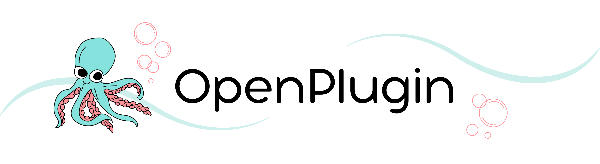

Documentation#
Multimodal API Bridge - make APIs into chat and multimodal ready interfaces. serverless optional.
Summary#
This is an open source effort to create an ecosystem around LLM enabled APIs. We make it easy to “chat with an API”, that is, to send natural language as the input to the API and have it process it. Then, we offer several options to easily transform the APIs response into something better suited to human consumption like text, markdown, HTML, JSX, voice, video, etc.
The OpenPlugin Platform#
OpenPlugin Manifest: A standardized, machine-readable format to describe the metadata and capabilities of plugins, enabling seamless discovery, installation, and integration across different AI platforms and development environments.
OpenPlugin Server: An open-source server that securely executes plugins on behalf of developers, providing a reliable and scalable infrastructure for running plugin-powered applications.
OpenPlugin SDK: A set of convenience libraries (e.g., Python, JavaScript) that abstract the underlying REST interface, making it easier for developers to integrate and utilize plugins within their preferred programming languages and development workflows.
OpenPlugin Catalog Repositories: A network of publicly accessible repositories (e.g., GitHub) that store the descriptors for a wide range of available plugins, allowing developers to discover, evaluate, and incorporate the functionality they need into their applications.
Basic Scenario#
Target Plugin: Google Finance API
Input Request: “Get the stock price for Amazon.”
Optional Responses:
standard JSON response object
a formatted response (HTML, Markdown, JSX, …)
a multimodal response (text-to-voice, image, …)
Getting Started#
Building LLM Plugins
Creating your own plugins is a straightforward process. The best way to get started is by cloning an existing plugin and modifying it to suit your needs.
For a quick start guide on building plugins, refer to: Creating Your First Plugin
Calling a Plugin
Once you have a plugin manifest ready, you can send it to the OpenPlugin server along with your prompt. Plugins can be invoked using an HTTP request or by leveraging the openplugin-sdk.
To learn more about calling plugins, check out: Getting Started
Discovering Existing Plugins
To make your newly created plugin discoverable, you can publish it on platforms like GitHub or the Imprompt marketplace.
To start exploring the available plugins, refer to: Find Plugins
Hosting Your Own Plugin Server (Optional)
If you prefer, you can run your own OpenPlugin server and make it publicly accessible on the internet or keep it private behind your firewall.
For guidance on hosting your own plugin server, check out: Getting Started
Alternatively, if you’d like to use a public server, you can visit https://app.imprompt.ai and access the Plugin Builder from the main menu.
Important
This documentation was generated on Jul 31, 2024.